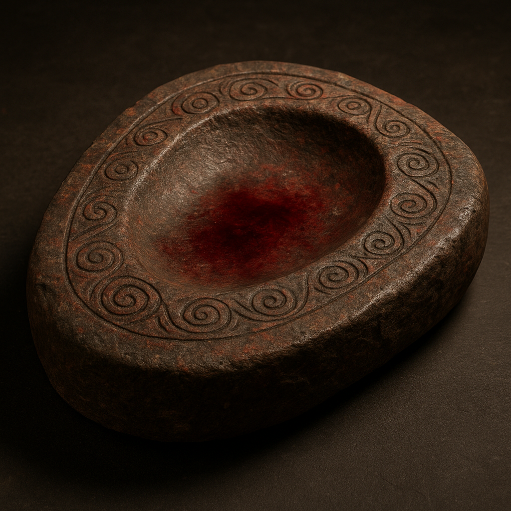
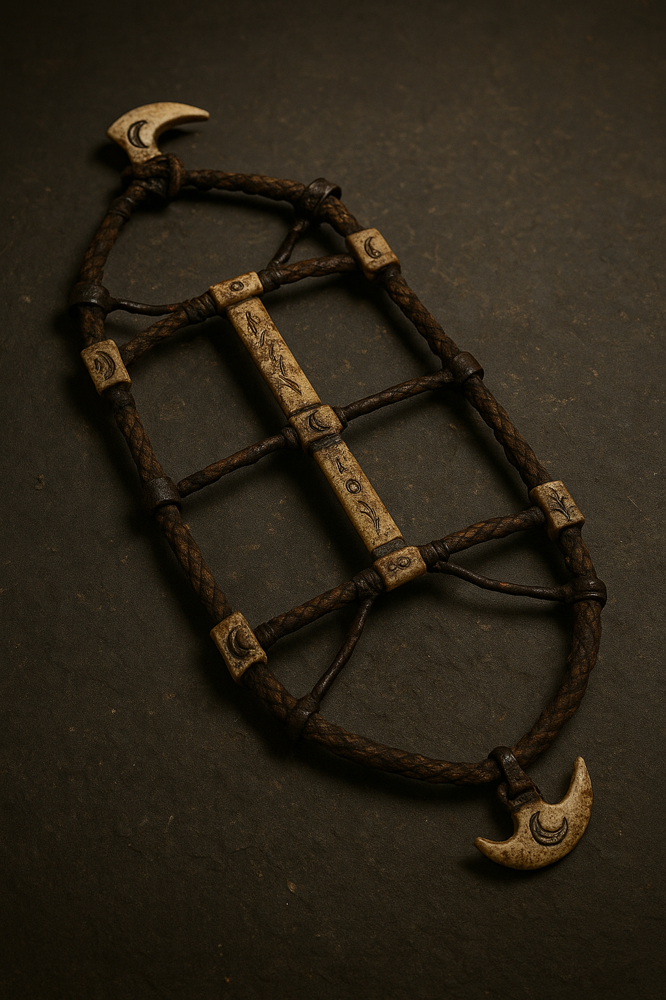

Welcome to the Vault of Wonders
Where relics breathe with the echoes of ages past. Step into the shadows between history and myth, and behold artifacts once cradled by heroes, feared by kings, and coveted by the unseen. Each piece tells a story woven from truth and tale—inviting you to uncover the mysteries they still guard.
Vampire: Bloodbound Cradle Stone

Material: Hematite-infused limestone with trace organic residue.
Size/Weight/Shape: 48 cm x 33 cm; approx. 29.5 kg; oval slab with shallow central indentation.
Physical Properties: Dense, iron-rich stone; cool to the touch; lightly concave surface worn smooth with time.
Estimated Age: 2,200–2,400 BCE; inferred from surrounding burial strata and radiocarbon analysis of nearby organic material.
Preservation State: Intact with minor edge erosion; surface iconography partially weathered.
Location Found: Ghorat Caverns, Northern Carpathians (Layer VII-B); chamber sealed with ritual stone markers.
Likely Purpose: Ceremonial vessel or resting surface—possibly for initiation or postmortem transformation.
Evidence of Use: Trace amounts of congealed hemoglobin in basin; faint scratch marks consistent with clawed extremities
Manufacture Clues: Chisel lines along base suggest hand-carving; geometric spiral patterns etched on rim, possibly symbolic.
Found With: Clustered with humanoid skeletal remains exhibiting cranial elongation and dental modification; flanked by fang-shaped amulets.
Burial or Habitat Context: Sealed chamber deep within cave complex; lunar-aligned; inferred tomb-temple hybrid.
Symbolism: Spiral etchings and hematite suggest themes of blood circulation, rebirth, or transformation; aligns with vampire myth cycles.
Comparison: Shares form and symbolic motifs with the Nightstone Altars of Upper Thrace and Mesopotamian cradle-sacrifice stones.
Lycanthrope: Moon-Clasp Ritual Harness

Material: Braided sinew, iron fittings, and carved wolf-bone inlays.
Size/Weight/Shape: Approx. 112 cm in length; weighs 7.6 kg; shaped like a harness or body frame with jointed fastenings.
Physical Properties: Semi-flexible organic structure with rigid iron anchor points; bone elements are etched and burnished
Estimated Age: 1,800–2,000 BCE; carbon-dated sinew and bone match datable organic remains in adjacent layers.
Preservation State: Partial—about 65% intact; sinew degraded in places but key bone and metal components preserved.
Location Found: Duskmere Hollow excavation site, Carpathian Basin (Layer V); chamber sealed beneath collapsed stone circle.
Likely Purpose: Ceremonial restraint or transformation harness; possibly used in controlled shapeshifting rituals.
Evidence of Use: Bone clasps show heavy wear; darkened residue near the iron fittings suggests exposure to heat or blood.
Manufacture Clues: Hand-carved bone etchings depict lunar phases; forged iron elements show hammer marks and ritual scoring.
Found With: Discovered alongside partial humanoid-canine hybrid skeletal remains and ritual incense fragments.
Burial or Habitat Context: Subterranean chamber beneath ancient stone circle; arrangement suggests intentional interment.
Symbolism: Lunar iconography and wolf imagery suggest ties to lycanthropic transformation rites and lunar deities.
Comparison: Resembles ritual gear described in Alpine shapeshifter cult records and the Ironbind Restraints of Old Norvald tradition.